Дефект, ошибки, баги
- Темы лекции:
- Что такое ошибка, дефект, сбой и баг
- Как завести хороший отчет об ощибке
- Оракулы
Что обычно делает тестировщик?
Тестирование - проверяем, что работа продукта соответствует требованиям
А если не соответствует - то это дефект
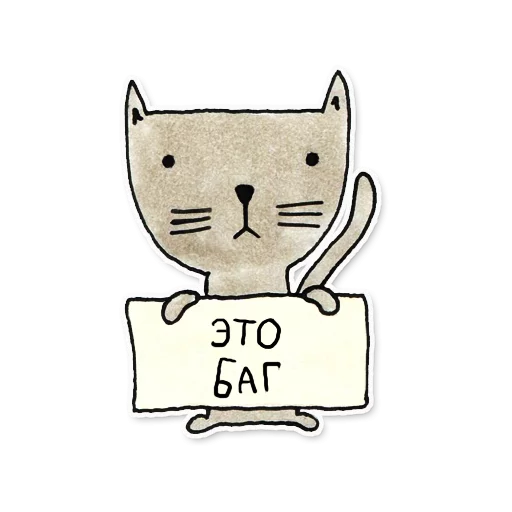- Ошибка [ISQTB] Действие человека, которое приводит к неправильному результату.
- Дефект - результат ошибочного действия: можно не заметить, но он есть.
- Сбой - проявление дефекта и использовании системы
- Баг - жаргонный синоним "дефект"
[ISQTB] Изъян в компоненте или системе, который может привести компонент или систему к невозможности выполнить требуемую функциональность, например неверный оператор или определение данных. Дефект, обнаруженный во время выполнения, может привести к отказам компонента или системы.
Какие бывают ошибки:
функциональные
верстки
интеграционные
контента
локализации
удобства использования
безопасности
Алгоритм действий при обнаружении ошибки
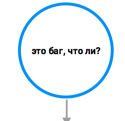
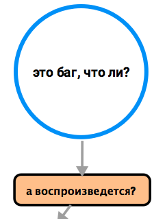
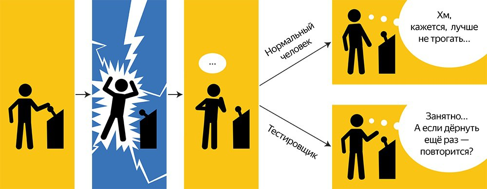
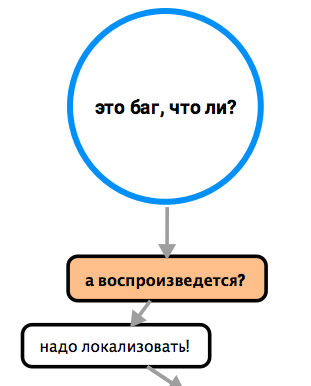
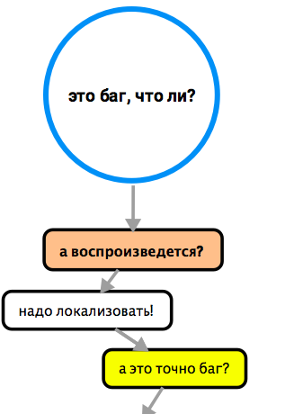
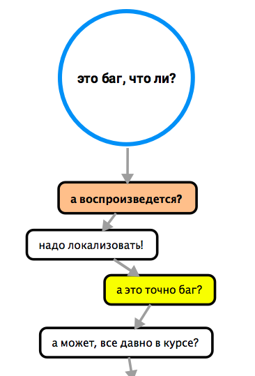
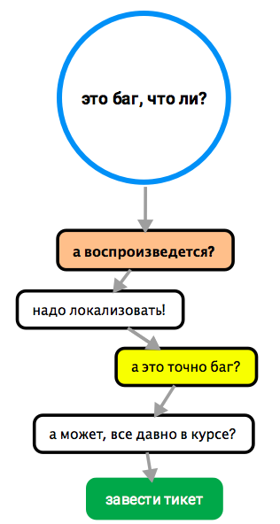
Тикет / Отчет об ошибке – это технический документ, описывающий ситуацию или последовательность действий, приведших к некорректной работе объекта тестирования, с указанием причин и ожидаемого результата.
Хороший отчет об ошибке
— это документ, после прочтения которого человек, знакомый с продуктом, сразу поймет, где была допущена ошибка, а не знакомый сможет с первого раза воспроизвести ошибку по указанным шагам и приложенным материалам.
- Тип — позволяет понять содержимое тикета
- Заголовок — коротко о найденой проблеме
- Описание — полное описание найденной проблеме
- Инструкция для воспроизведения — алгоритм для воспроизведения обнаруженной проблеме
- Информация об окружении — сокращает область поиска причин обнаруженной проблемы
- Дополнительные материалы — наглядное представление о найденной проблеме
- Критичность - на сколько ошибка задевает ПО в целом
Тип
- Ошибка - отчет об ошибке
- Улучшение - отчеты о проблемах в требованиях, дизайне и т.д.
- Задача - требования
Заголовок
Правило WWW
WHAT
WHERE
WHEN
Хорошее названия
На главной страниц поиска в строке ввода запроса сохраняется введенный ранее текст после обновления страницы
|
Плохие названия
Ошибка в Корзине
Страница не найдена
Нет сообщения об ошибке
Практика
Что? Где? Когда?
- Придумать названия для случаев:
ке.12.2019
в блогах у даты публикации поста вместо 31.12.20194*3=1
в калькуляторе 4*3=12в блогах легла соц.сеть для поделяшек
вместо репоста поста
Описание
- может состять из:
- предусловия
- тестовые данные
- ссылки
- что считаете нужным
Кто будет читать тикет?
Разработчик
Менеджер
Аналитик
Другой тестировщик
и даже может быть ваш руководитель
Инструкция для воспроизведения
Инструкция состоит из шагов для воспроизведения, ожидаемого результата (ОР) и фактического/полученного результата (ФР / ПР).
Шаги для воспроизведения не должныть быть "перегружены" информацией
- Что сделали?
- Что случилось?
- А как должно быть?
- Не определили необходимое и достаточное?
- Воспроизводим
- Записываем шаги
- Открываем другой браузер / в инкогнито / на другом устройстве ПО
- Повторяем шаги
Повторили? Пытаемся убоать / сократить шаги и повторить еще раз
Не повторили? Какие-то шаги были нужными и их надо вернуть
описание должно быть понятно всем в команде, иначе
Информация об окружении
Где? В баре? Дома? На улице?
Ответ: г Москва, ул. Ленина, д 6, кв 7
Проблема может казаться только на одной платформе или на конкретном движке браузера
Важно указать и операционную систему
- это все сужает круг поиска ошибки
Дополнительные материалы
- Фото
- Видео
- Логи
- Файлы
- прочее
Критичность / Приоритет
- Блокер (Blocker) Приложение не работает. Дальнейшая работа с программой или тестируемой функциональностью невозможна.
- Критичный (Critical) Приложение не работает, но дальнейшая работа с программой или тестируемой функциональностью возможна.
- Средний (Major) Приложение работает, но программа или тестируемая функциональность выдает некорректный результат.
- Низкий (Minor) Ошибка не нарушает логику программы или тестируемой функциональности. Очевидная проблема интерфейса.
- Незначительный (Trivial) Ошибки, не касающиеся логики программы или тестируемой функциональности.
Пример
|
Тип: Ошибка Заголовок: На странице авторизации в поле пароля сохраняется введенный ранее текст после выхода из системы. Описание: На странице авторизации, открытой в отдельной вкладке после выхода из системы, поля логина и пароля заполняются учетными данными неавторизованного пользователя. Предусловие: предварительно войти в аккаунт user (логин "login" / пароль "password") Шаги: 1. Перейти на страницу https://www.google.ru 2. Нажать на аватарку. 3. Нажать кнопку "Выйти". 4. Обновить страницу (клавиша F5). 5. Нажать кнопку «Добавить аккаунт» правой кнопкой мыши. 6. В контекстном меню выбрать пункт "Открыть в новой вкладке". |
Результат: Поле Логин заполнено: login. Поле Пароль заполнено: password. Ожидаем: Поле Логин пустое. Поле Пароль пустое. Окружение: macOS 10.13.6: Google Chrome версии 72.0.3584.0 (64 бит) Сборка: "new_auth" Приоритет: Критичный |
Жизненный цикл тикета с домашними заданиями
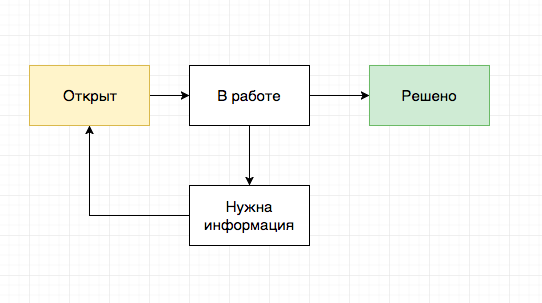
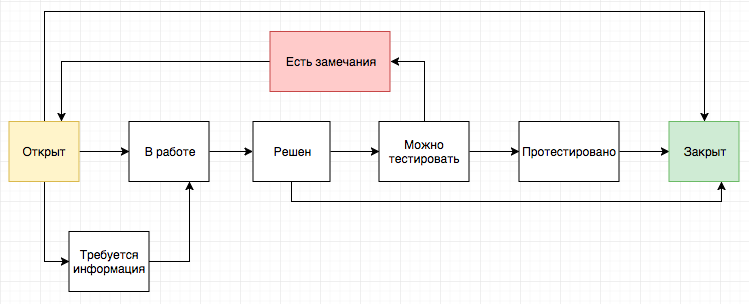
Нюансы
- Не получается стабильно воспроизвести
- Неясен ожидаемый результат
Спецификация, Техническое задание (ТЗ), Документация
ПО соответствует требованиям + работает без ошибок == ПО работает верно?
НЕТ!
Расхождение между программой и ее спецификацией считается ошибкой тогда, и только тогда, когда спецификация существует и она правильна
(Канер, “Тестирование ПО”)
Почему требования могут быть "неверными"?
- Их пишут люди
- Они могут быть недокументированы
Хорошо протестировать программу !== сравнить реализацию с ТЗ (но требования - важнее)
Оракул
- эвристический признак или механизм для распознования проблемы.
Как понять, что ПО работает неправильно?
1. Сравнить с предыдущей версией
| 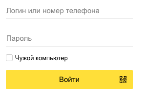 |  |
| Version 1.0 | Version 1.1 |
2. Сравнить с похожими ПО
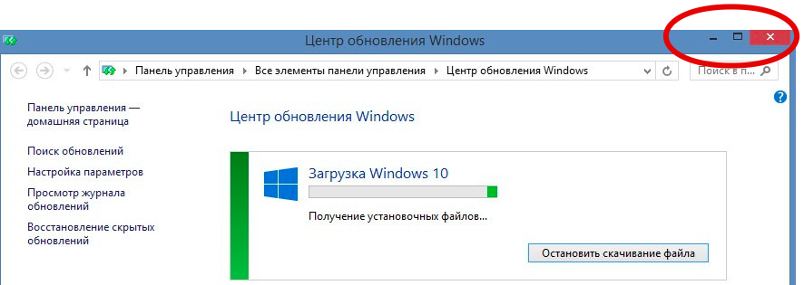
3. Прикинуть, какие в этом случае ожидания у пользователя
4. Сравнить с другими похожими элементами системы
 | 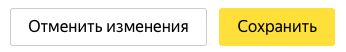 |
| Все страницы сайта | Одна страница |
5. Проверить на соответствие законам и стандартам
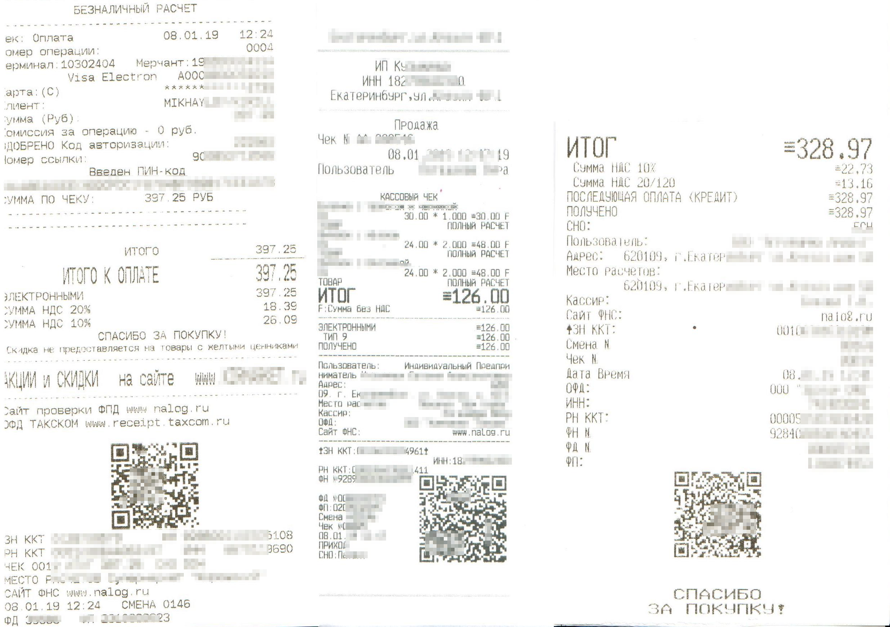6. Проверить, что текущее поведение не похоже на какую-то уже известную проблему
7. Поведение системы соответствует представлениям о мире
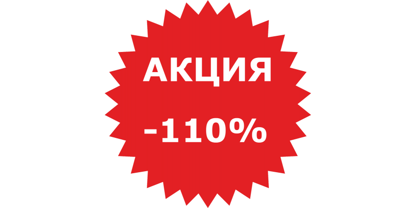Задание
- Найти любое web-приложение
- Провести исследовательское тестирование web-приложения
- Завести отчеты об ошибке в трекере (3-5 штук)
- Цель:
- научиться пользоваться баг-трекером
- создавать отчеты об ошибках